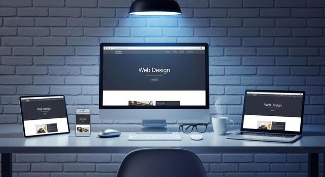

MY PROJECT

The Modern Business Website is a professional website designed to provide information about a business and its services. The main focus of the project was to create a clean, attractive and easy-to-use website.
The main objective was to create an online presence for a business where visitors can learn about the company, understand its services and easily contact the business.
The website includes a responsive navigation menu, attractive hero section, service cards, portfolio section, blog area and contact form. The layout is designed to work on desktop, tablet and mobile devices.
I worked on the website structure, page layout, styling and interactive elements. I used HTML for the structure, CSS for the design and JavaScript for interactive functionality.
I designed the website so that the content adjusts properly according to the screen size. This provides a better experience for users accessing the website from laptops, tablets and smartphones.
One of the challenges was maintaining a consistent layout across different screen sizes. I solved this by using responsive CSS techniques and testing the website at different resolutions.
This project helped me improve my knowledge of HTML, CSS, JavaScript, responsive design and website structure. I also learned how to organize a complete website into different sections.
← Back to Portfolio